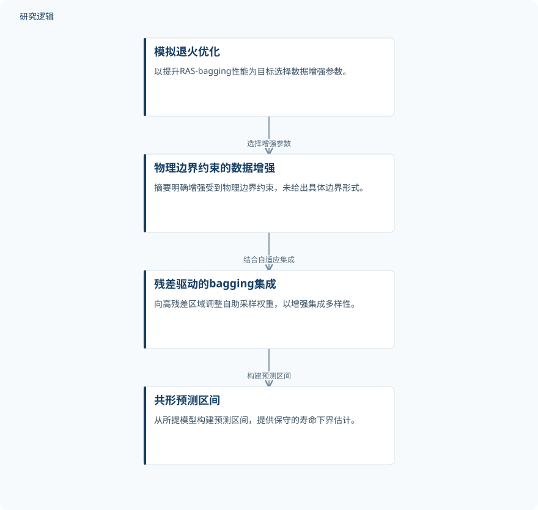

摘要解读
基于优化数据增强与自适应采样的疲劳寿命预测方法
A Fatigue Life Prediction Method Based on Optimized Data Augmentation Algorithm and Adaptive Sampling Model
解读更新 2026-11-10 18:26 · 依据公开摘要整理，未核验全文细节
疲劳寿命数据稀缺时，机器学习如何兼顾预测精度与可靠性判断？这项研究将数据增强参数优化与残差驱动的集成采样结合，在所研究的数据集上报告了误差降低，并给出了寿命预测区间。
文章目录
小样本疲劳预测：数据少，建模难
摘要指出，疲劳寿命预测所用的数据集通常少于50个样本，给机器学习建模带来明显挑战。研究关注的不只是增加训练数据，还包括如何调整集成模型的采样方式，让有限数据得到更有效的利用。这里的“通常少于50个样本”是问题背景，不能据此认定本文各数据集的实际样本量。
模拟退火选增强参数，残差引导集成采样
作者提出将模拟退火（SA）引导的数据增强，与残差驱动的自适应采样（RAS）bagging集成结合。SA以提升RAS-bagging性能为目标寻找增强参数；RAS则向高残差区域自适应调整自助采样权重，以增强集成多样性。摘要还明确，数据增强受到物理边界约束，但未说明边界的具体形式。
性能评估采用重复嵌套交叉验证，设置为十折、30次重复，并使用相同划分进行比较。摘要中的明确基线是经典bagging；此外，作者从所提模型构建共形预测区间，用于表达寿命预测的不确定性。
依据摘要整理的增强与预测流程


仅概括摘要明确给出的参数优化、增强、集成预测与区间估计关系，不代表论文原图或完整实验流程。
下载 SVG图示关系说明
实线表示相邻阶段的信息流，虚线表示跨阶段联系或反馈。
模拟退火优化 → 物理边界约束的数据增强：选择增强参数；物理边界约束的数据增强 → 残差驱动的bagging集成：结合自适应集成；残差驱动的bagging集成 → 共形预测区间：构建预测区间
误差下降之外，给出寿命区间
在CFRP和DH36数据集上，摘要报告该框架相较经典bagging获得显著改善，平均绝对误差（MAE）分别降低85.8%和64.3%。作者还报告了Wilcoxon符号秩检验及较大的效应量，但当前摘要中的具体检验数值与部分指标名称缺失，不能据此补全统计结果。
名义覆盖率为80%的共形预测区间取得84%的经验覆盖率。摘要将其用于提供保守的寿命下界估计，支持面向可靠性的决策。这与点预测误差改善是不同层面的结果，尚不能等同于汽车可靠性评估或结构健康监测中的实际应用效果。
结论限于已研究数据，缺失指标不补写
仅凭摘要，无法判断各数据集的实际样本量、材料与载荷条件、增强数据的生成细节，以及嵌套验证中参数选择的具体流程。比较范围也只能确认到摘要明确提及的经典bagging，不能推断其已优于其他疲劳寿命预测方法。
当前摘要还存在均值指标、前后数值及标准差所属指标缺失的问题，因此无法完整解释全部性能变化。作者明确提出，向汽车可靠性评估和结构健康监测推广前，仍需更大规模独立样本、现场数据及在线学习场景验证；这不是说论文没有开展任何其他验证。
阅读启发：把精度改善与可靠性证据分开看
阅读启发：对疲劳可靠性与智能运维读者，值得继续关注的是物理边界如何约束增强数据、高残差采样如何影响预测，以及寿命下界的适用条件。进一步阅读时，应区分误差下降、区间覆盖表现与现场决策价值，不把增强数据视为新增独立试验样本，也不把预期应用当作已经验证的成果。
以上为本站阅读启发与建议，不是论文已验证的结论。